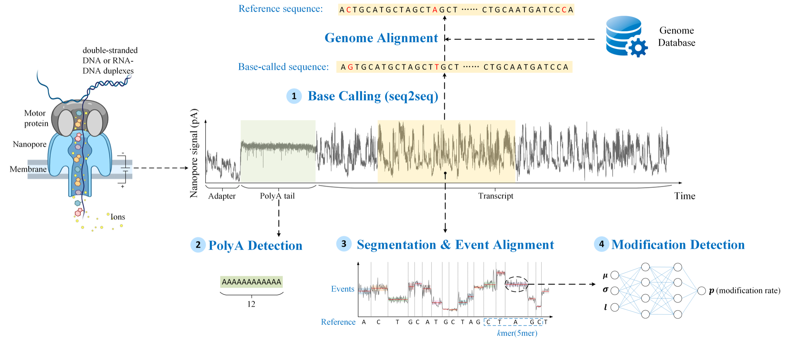

Guppy 6.0.1 (DNA) · Dorado 0.5.3 (RNA)
Best match rates of 93.60% on NA12878 and 93.96% on hek293t_wt. Second-generation sequencing reaches 99.9%, so the headroom is large.
Full tables and chartFour interdependent tasks, each with ground truth acquisition, evaluation metrics, baseline models and results on held-out test datasets that were never used to train any baseline.

| Task | Input | Output | Learning setting | Typical models | Metrics |
|---|---|---|---|---|---|
| BC Base calling | Raw current signal | Nucleotide sequence | Supervised, generative seq2seq | CNN + LSTM + CTC-CRF (Bonito); UNet + GRU; CNN + Transformer + CTC; ResNet + CTC | Match / mismatch / insertion / deletion rates |
| PD PolyA detection | Raw current signal | Tail flag, borders, length | Unsupervised or supervised, predictive | Hidden Markov models; deep basecaller heads | Detection rate, length MSE |
| SA Segmentation & event alignment | Raw signal + reference sequence | Event alignment table | Unsupervised, predictive | Hidden Markov models; banded dynamic programming | Average std σ̂, average log-likelihood L̂ |
| MD Modification detection | Event alignment results | Modification probability per site and read | Supervised, predictive, multiple-instance | SVM; random forest; XGBoost; CNN; MIL neural nets | ROC AUC, PR AUC |
Best match rates of 93.60% on NA12878 and 93.96% on hek293t_wt. Second-generation sequencing reaches 99.9%, so the headroom is large.
Full tables and chartHighest detection rate on all seven test datasets; Nanopolish polya varies strongly across datasets because it depends on alignment. Length estimates are similar across tools.
Detection rates and length benchmarkLowest average within-event std and highest log-likelihood against the ONT k-mer table on all three human RNA test sets.
Metrics per datasetm6Anet leads on all three m6A ground truths (ROC AUC up to 0.891); CHEUI-solo leads for m5C (ROC AUC 0.842). Precision-recall AUCs stay below 0.5, showing how hard the task remains.
ROC and PR AUC tablesNanoBaseLib v1.0 does not run a hosted leaderboard. To add a method, evaluate it with the package's scripts on the test datasets listed on each task page and open an issue or pull request with the output files and the exact command line. Results are added to the task pages with the method name, version and configuration.